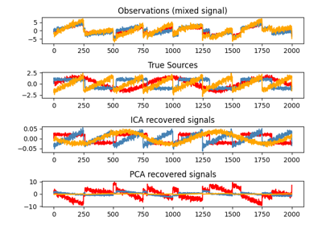
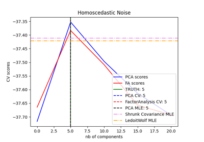

Decomposition¶
Examples concerning the sklearn.decomposition module.

Blind source separation using FastICA
Blind source separation using FastICA

Comparison of LDA and PCA 2D projection of Iris dataset
Comparison of LDA and PCA 2D projection of Iris dataset


Factor Analysis (with rotation) to visualize patterns
Factor Analysis (with rotation) to visualize patterns



Model selection with Probabilistic PCA and Factor Analysis (FA)
Model selection with Probabilistic PCA and Factor Analysis (FA)